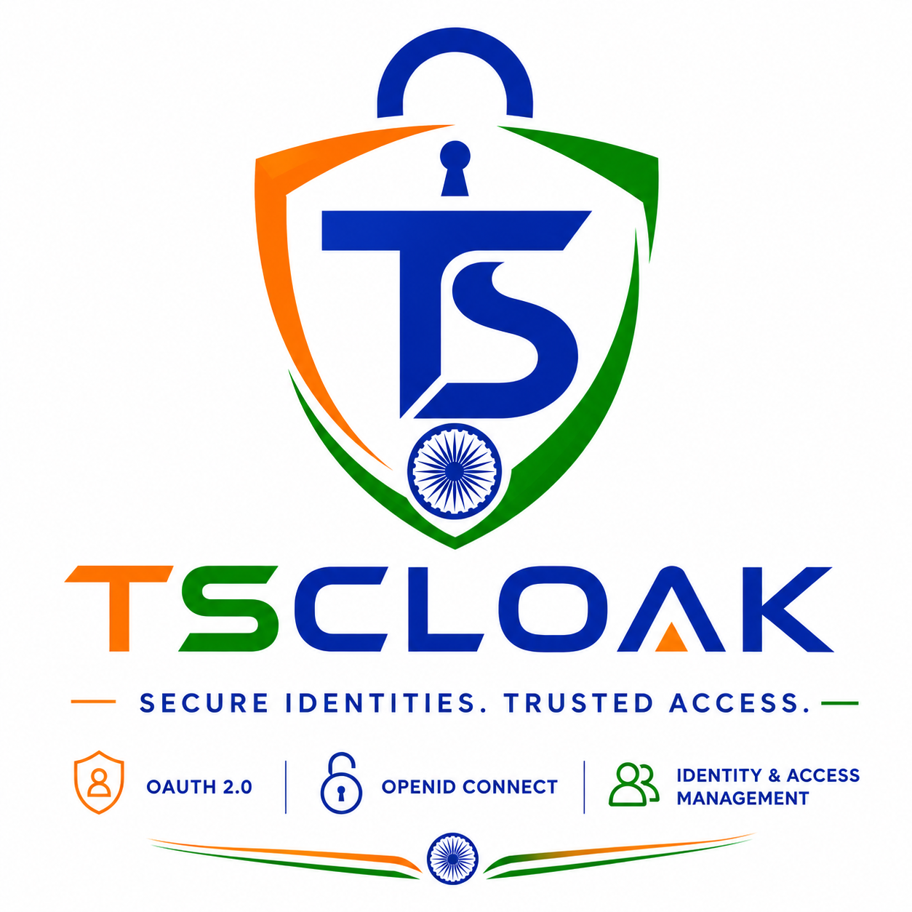

Authentication & Authorization
Secure OAuth 2.0 and OpenID Connect flows for modern applications and services.
TSCloak is a modern, extensible Identity and Access Management platform designed to provide secure authentication and authorization using OAuth 2.0 and OpenID Connect.

BUILT ON INDUSTRY STANDARDS
Standards-based identity infrastructure designed with modularity, security and extensibility in mind.
Secure OAuth 2.0 and OpenID Connect flows for modern applications and services.
Manage OAuth clients, redirect URIs, grants and application configuration.
Centralized security policies for controlling authentication and identity behaviour.
Secure signing key management and public key distribution through JWKS.
Secure issuance and lifecycle management for OAuth and OpenID Connect tokens.
Database-backed persistence for identity and OpenID Connect configuration.
TSCloak separates product interfaces, protocol integration, domain logic and persistence to keep the identity platform modular and extensible.
REST APIs, administration capabilities, Swagger documentation and product interfaces.
Standards-compliant integration with OAuth 2.0 and OpenID Connect provider flows.
Authentication, client configuration, security policies and identity services.
TypeORM persistence, signing key management and cryptographic operations.
TSCloak provides a foundation for secure identity management with centralized policies, signing keys and standards-based token handling.
Secure Identities.
Trusted Access.
Explore APIs, OpenID Connect discovery and standards-based endpoints directly from your TSCloak instance.
Standards-based. Modular. Extensible.